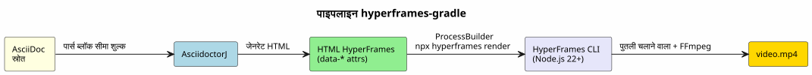

HyperFrames-Gradle : AsciiDoc को MP4 वीडियो में बदलें
प्रकाशित: 31 May 2026
पढ़ने का समय : 8 minutes
दो सप्ताह पहले, मैंने शुरू किया`capsule-gradle`— एक प्लगइन जो एक डेक को बदलता है TTS के साथ एक WebM वीडियो कैप्सूल। आज, मैं एक नया प्लगइन जोड़ रहा हूँ: hyperframes-gradle. वह कुछ ऐसा करता है जो capsule-gradle नहीं करता : AsciiDoc को सीधे MP4 वीडियो में बदलें, reveal.js के बिना।
यहाँ बताया गया है कि यह प्लगइन क्यों मौजूद है और यह पहले से मौजूद प्रणाली के साथ कैसे फिट बैठता है, और HeyGen के HyperFrames इंजन सामग्री उत्पादन पाइपलाइन में क्या लाता है
वीडियो पाइपलाइन में छेद
मेरी डॉक्यूमेंट्री पाइपलाइन दो प्रकार के वीडियो का उत्पादन करती है:
-
समीक्षा कैप्सूल (capsule-gradle) — एक reveal.js डेक जो WebM में कैप्चर किया गया है और
narration TTS. मॉड्यूल की समीक्षा करने के लिए परफेक्ट।
-
एनीमेशन स्लाइड्स (slider-gradle) — एक इंटरैक्टिव रिवील.जेएस एचटीएमएल डेक के लिए
ऑफ़लाइन प्रशिक्षक.
लेकिन इसमें एक तीसरा प्रारूप नहीं है: स्टैंडअलोन वीडियो।
| यूज़ केस | वर्तमान समाधान | अभाव |
|---|---|---|
स्लाइड्स प्रशिक्षक |
slider-gradle → reveal.js |
✅ |
संशोधन कैप्सूल |
capsule-gradle → WebM |
(No visible output) |
विडियो टीज़िंग |
कोई नहीं |
❌ |
एनिमेटेड तकनीकी डेमो |
कोई नहीं |
❌ |
दस्तावेज़-से-विडियो |
कोई नहीं |
❌ |
पहला use case महत्वपूर्ण है : कैसे स्वचालित रूप से उत्पन्न करें एक 60-सेकंड का वीडियो जो एक प्रोजेक्ट या मॉड्यूल पेश करता है, GSAP एनीमेशन के साथ टीटीएस नैरेशन, और पृष्ठभूमि संगीत — सब एक ही एस्कीडॉक फ़ाइल से स्लाइड्स क्या हैं?
कैप्सूल-ग्रेडल उत्तर नहीं दे सकता है: इसे पहले से ही एक Reveal.js डेक चाहिए। slider-gradle इस डेक को अच्छी तरह से उत्पन्न करता है, लेकिन यह वीडियो रेंडरिंग के लिए डिज़ाइन नहीं किया गया है। एक सीधा पाइपलाइन चाहिए था: AsciiDoc → वीडियो।
HyperFrames : इंजन
मैंने खोजाhttps://github.com/heygen-com/hyperframes[HyperFrames] il y a कुछ दिनों। यह Apache 2.0 (Apache 2.0) लाइसेंस के तहत ओपन-सोर्स फ्रेमवर्क है, जिसे HeyGen ने बनाया है, एआई वीडियो की यूनिकॉर्न। 22 700 स्टार GitHub पर। पिच फिट होता है। एक वाक्य:
HTML लिखें। वीडियो रेंडर करें। एजेंट्स के लिए बनाया गया।
सिद्धांत : आप HTML के साथ लिखते हैं`data-*` attributes, vous référencez एक GSAP एनिमेशन (या CSS, Lottie, Three.js…), और इंजन सब कुछ MP4 में रेंडर करता है। Puppeteer (headless Chrome) + FFmpeg के माध्यम से। निर्धारित परिणाम: वही इनपुट, एक ही फ़्रेम, एक ही वीडियो।
<div id="stage" data-composition-id="intro" data-start="0" data-width="1920" data-height="1080">
<video class="clip" data-start="0" data-duration="6" data-track-index="0"
src="background.mp4" muted playsinline></video>
<h1 id="title" class="clip" data-start="1" data-duration="4" data-track-index="1">
Formation Docker & Kubernetes
</h1>
<audio data-start="0" data-duration="6" data-track-index="2"
data-volume="0.3" src="music.wav"></audio>
<script src="https://cdn.jsdelivr.net/npm/gsap@3/dist/gsap.min.js"></script>
<script>
const tl = gsap.timeline({ paused: true });
tl.from("#title", { opacity: 0, y: 40, duration: 0.8 }, 1);
window.__timelines = window.__timelines || {};
window.__timelines.intro = tl;
</script>
</div>HyperFrames और Remotion में क्या अंतर है? कोई React नहीं, कोई नहीं बंडलर, कोई JSX नहीं। कच्चा HTML जिसे AI एजेंट मूल रूप से लिख सकते हैं। मेरे पाइपलाइन के लिए exactement planner-gradle और deepseek के साथ अनुकूलित है यह SPG/SPD योजना से इस HTML को जनरेट कर सकता है, और एक Gradle प्लगइन। इसे MP4 में बदल दिया जा सकता है।
प्लगइन की आर्किटेक्चर
hyperframes-gradle मेरे सभी प्लगइन्स के समान पैटर्न का पालन करता है: यह pattern « स्वतंत्र प्लगिन + उपभोक्ता मूल ».
hyperframes-gradle/
├── settings.gradle.kts ← racine consommateur (dogfood)
├── build.gradle.kts ← 3 lignes : apply plugin hyperframes
├── hyperframes-plugin/ ← BUILD INDÉPENDANT
│ ├── gradlew ← son propre wrapper
│ ├── build.gradle.kts ← java-gradle-plugin
│ ├── src/main/kotlin/education/cccp/hyperframes/
│ │ ├── HyperframesPlugin.kt
│ │ ├── GenerateHyperframesHtmlTask.kt
│ │ ├── RenderHyperframesTask.kt
│ │ └── HyperframesExtension.kt
│ ├── .agents/ ← gouvernance agent
│ └── doc/
│ └── HYPERFRAMES_ARCHITECTURE.adoc
└── video.yml ← configuration dogfoodचार-चरणीय पाइपलाइन

-
AsciidoctorJ AsciiDoc स्रोत को पार्स करता है और कस्टम ब्लॉक निकालता है
[hyperframes-composition], [hyperframes-track], [hyperframes-animation].
-
GenerateHyperframesHtmlTask HTML HyperFrames के साथ उत्पन्न करता है
`data-*`संबंधित विशेषताएँ.
-
RenderHyperframesTask HyperFrames CLI को बुलाता है via`ProcessBuilder`:
npx hyperframes render --input index.html --output video.mp4.
-
MP4 में तैनात किया गया है`output/`के साथ एक`metadata.json`ऑर्केस्ट्रेशन के लिए।
DSL AsciiDoc
प्लगइन का असली अतिरिक्त मूल्य AsciiDoc DSL है। उपयोगकर्ता वह कभी HTML नहीं लिखता। वह अपने मौजूदा AsciiDoc दस्तावेज़ को अनोटेट करता है:
= Formation Docker & Kubernetes
:hyperframes-width: 1920
:hyperframes-height: 1080
:hyperframes-fps: 30
[hyperframes-composition, id="intro"]
== Introduction
Le titre apparaît avec un fondu GSAP sur fond vidéo.
[hyperframes-track, index=0, start=0, duration=6]
video::assets/background.mp4[muted, playsinline]
[hyperframes-track, index=1, start=1, duration=4]
Formation Docker & Kubernetes
[hyperframes-animation, type=gsap]const tl = gsap.timeline({ paused: true }); tl.from("#title", { opacity: 0, y: 40, duration: 0.8 }, 1); window.timelines = window.timelines || {}; window.__timelines.intro = tl;
docinfo विशेषताएँ`:hyperframes-width:`) वे आयामों को सेट करते हैं। कस्टम ब्लॉक्स संगीत रचनाओं और ट्रैक्स को परिभाषित करते हैं। ब्लॉक `[hyperframes-animation]`इसमें GSAP का कच्चा कोड है — जो AI एजेंट यह प्राकृतिक भाषा के विवरण से उत्पन्न कर सकता है।
ले ब्रिज Node.js
इकलौती तकनीकी रुकावट: HyperFrames Node.js/TypeScript में बनाया गया है, और मेरे प्लगिन्स कोटलिन/JVM में हैं। समाधान एक`ProcessBuilder`(No characters)
class RenderHyperframesTask : DefaultTask() {
@TaskAction
fun render() {
val process = ProcessBuilder(
"npx", "hyperframes", "render",
"--input", inputHtml.absolutePath,
"--output", outputMp4.absolutePath
)
.inheritIO()
.start()
val exitCode = process.waitFor()
require(exitCode == 0) {
"HyperFrames render failed with exit code $exitCode"
}
}
}JVM कोड और Node.js के बीच शून्य कप्लिंग। अनुबंध कमांड लाइन से निर्धारित होता है। और डिस्क पर फ़ाइलें। यह वही पैटर्न है जो`plantuml-gradle` (जो PlantUML CLI को बुलाता है) या`slider-gradle`(जो AsciidoctorJ को बुलाता है) सूरज के नीचे कुछ भी नया नहीं — बस एक नए उपकरण पर लागू किया गया।
दो वीडियो प्लगइन, दो उपयोग
| कैप्सूल-ग्रैडल | हाइपरफ़्रेम्स-ग्रैडल | |
|---|---|---|
स्रोत |
Deck reveal.js (अस्तित्व में मौजूद HTML) |
Asciidoc → HTML HyperFrames |
उपयोग का मामला |
समीक्षा कैप्सूल |
स्टैंडअलोन व्याख्यात्मक वीडियो |
प्रकृति |
स्लाइड्स → वीडियो |
दस्तावेज़ → वीडियो |
दिया गया |
Playwright Java → WebM |
HyperFrames CLI → MP4 |
एनिमेशन |
रिवील.जे एस का मूल संक्रमण |
GSAP/CSS डेटा एट्रिब्यूट |
स्टैक |
100% JVM (Kotlin) |
JVM + Node.js बाह्य CLI |
वे एक दूसरे को नहीं बदलते हैं। वे एक-दूसरे के पूरक हैं। पूर्ण मूल्य श्रृंखला :
AsciiDoc ──→ slider-gradle ──→ deck reveal.js ──→ capsule-gradle ──→ WebM (कैप्सूल संशोधन)
AsciiDoc ──→ hyperframes-gradle ──→ MP4 (स्टैंडअलोन वीडियो)
लेखक एक ही ASCIIDoc फ़ाइल लिखता है। slider-gradle स्लाइड्स उत्पन्न करता है। capsule-gradle संशोधन कैप्सूल उत्पन्न करता है। hyperframes-gradle उत्पन्न करता है टीज़र वीडियो और तकनीकी डेमो।
रोडमैप के 6 EPICs
प्लगइन 6 EPICs में संरचित है :
| EPIC | विवरण | प्राथमिकता |
|---|---|---|
HF-0 |
बूटस्ट्रैप शासन + स्कोपिंग आर्किटेक्चर |
✅ समाप्त |
HF-1 |
Gradle स्टब प्लगिन + AsciidoctorJ एकीकरण |
P0 |
HF-2 |
ब्रिज CLI HyperFrames (ProcessBuilder → npx → MP4) |
P1 |
HF-3 |
DSL AsciiDoc प्रथाएँ (ब्लॉक, दस्तावेज़ जानकारी, टेम्प्लेट) |
P1 |
उच्च आवृत्ति-4 |
एकीकरण runner-gradle (metadata.json) |
P2 |
HF-5 |
त्वरित उपयोग के लिए टेम्प्लेट (title-card, code-diff, captions) |
P3 |
HF-6 |
CI + Maven Central / Gradle Portal प्रकाशन |
P3 |
सत्र 000 (bootstrap) पहले ही समाप्त हो गया है। सत्र 001 HF-1 पर हमला करेगा : ग्रेडल प्लगिन का स्टब और AsciidoctorJ का एकीकरण।
क्यों यह काम करता है
तीन कारण :
-
HyperFrames "built for agents". मेरी पाइपलाइन AI एजेंट्स पर आधारित है।
(planner-gradle + deepseek) सामग्री उत्पन्न करते हैं। HyperFrames स्वीकार करता है कच्चा HTML — वह प्रारूप जो LLM सबसे बेहतर तरीके से जानते हैं। रिएक्ट नहीं, नहीं JSX से, एजेंट के लिए कोई सीखने का वक्र नहीं है।
-
AsciiDoc DSL प्राकृतिक है. मेरा पूरा इकोसिस्टम AsciiDoc बोलता है।
slider-gradle, codex-gradle, training-gradle — सभी का उपयोग किया जाता है`.adoc`. कस्टम ब्लॉक जोड़ें`[hyperframes-composition]`एक एक्सटेंशन है तर्क, एक टूट नहीं.
-
Node.js ब्रिज एक सिद्ध पैटर्न है। JVM के बाहर ProcessBuilder,
मैं पहले से ही PlantUML, Graphviz, Piper के लिए यही कर रहा हूँ। HyperFrames जोड़ें। अरचिटेक्ट में कुछ भी बदल नहीं आता — यह एक अतिरिक्त बाहरी उपकरण है, Gradle द्वारा संचालित।
|
वास्तविक शक्ति पैटर्न की यह है कि इसमें कोई npm निर्भरता नहीं है ग्रैडल बिल्ड. प्लगिन Node.js कोड नहीं आयात करता है। यह एक निष्पादित करता है। शेल कमांड. यदि HyperFrames विकसित होता है या टूट जाता है, प्लगइन जुड़ा नहीं है। — कमांड को अपडेट करने की बस आवश्यकता है। |
निष्कर्ष : गायब कड़ी
hyperframes-gradle के साथ मेरा वीडियो पाइपलाइन पूरा है। मेरे पास :
-
ये इंटरेक्टिव स्लाइड्स (slider-gradle)
-
समीक्षा कैप्सूल (capsule-gradle)
-
स्टैंडअलोन वीडियो (hyperframes-gradle)
तीन प्रारूप। केवल एक स्रोत फ़ाइल: AsciiDoc.
अगला लक्ष्य HF-1 है: प्लगइन को कंपाइल करना और एक पहला HTML HyperFrame एक टिप्पणी‑युक्त AsciiDoc दस्तावेज़ से। सत्र 001 पहले से ही सही स्थिति में है।
hyperframes-gradle मौजूद है। शासन स्थापित है। बैकलॉग यह लिखा गया है। आर्किटेक्चर दस्तावेज़ीकृत है। प्लगइन बनाया गया है।
संदर्भ
-
Article 0124 — L’Architecture Plugin Indépendant + Racine Consommateur
-
foundry/public/hyperframes-gradle/hyperframes-plugin/doc/HYPERFRAMES_ARCHITECTURE.adoc— विस्तृत वास्तुकला